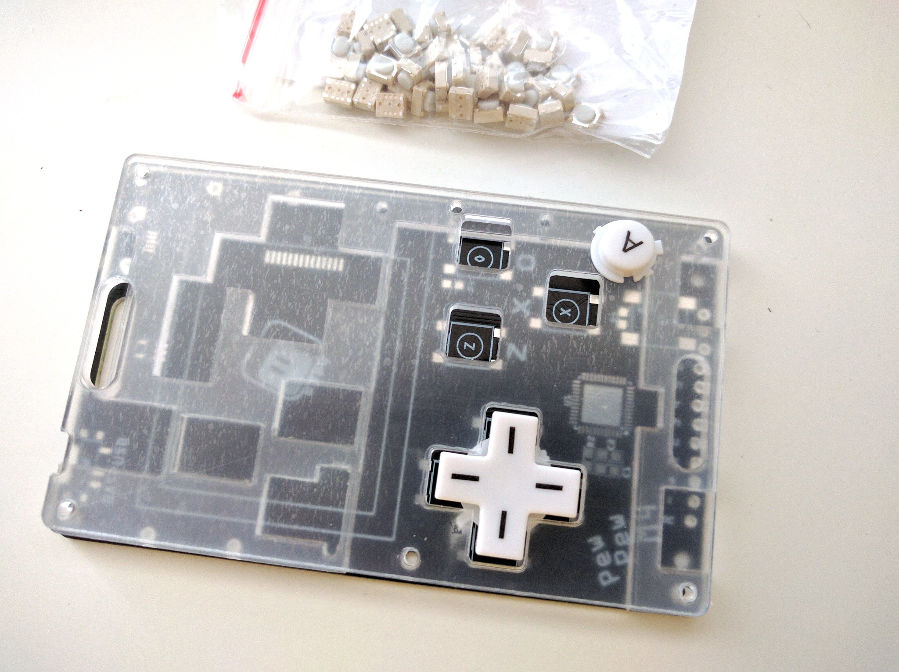
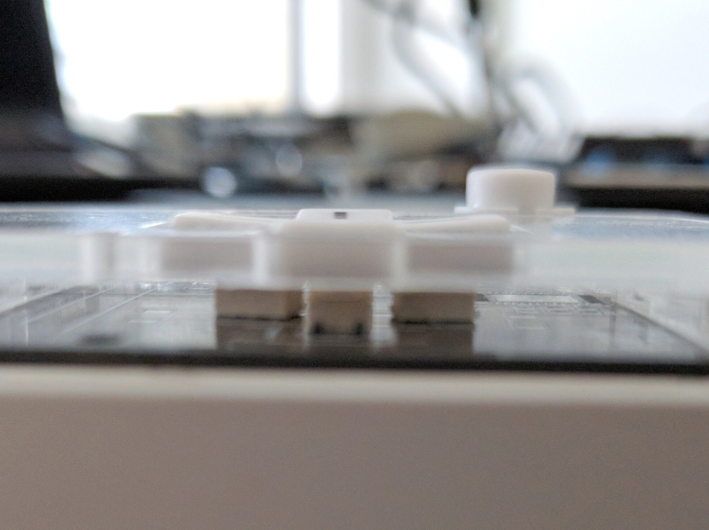
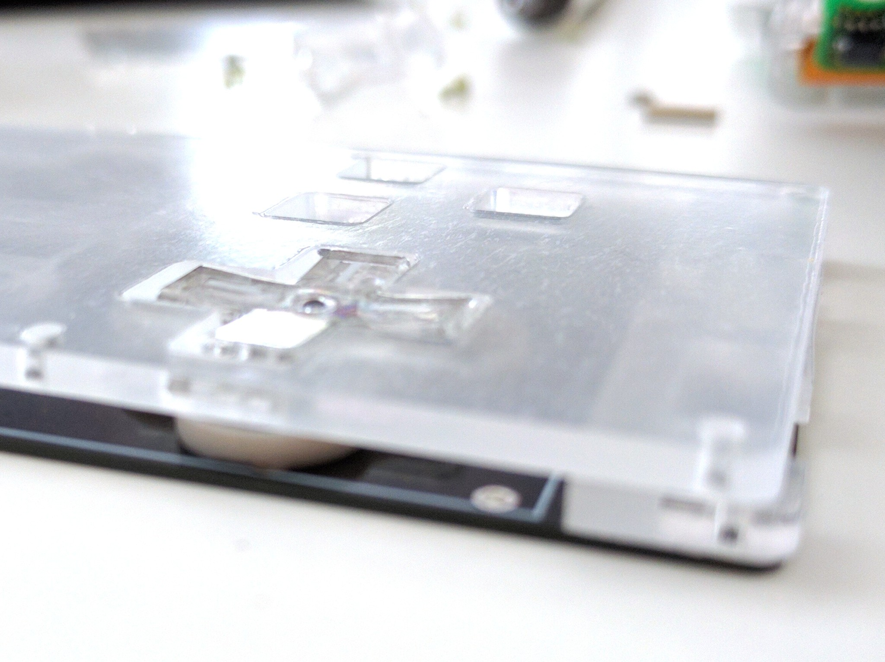

Pre-made Caps?¶
Published on 2019-10-05 in PewPew M4.
There is one more option for the button caps that I haven’t properly explored yet. I don’t have to 3D-print them or have them custom injection-molded if I can use existing parts from a commercial console. Turns out that most popular consoles out there have a lively modding community, and you can easily buy replacement button caps in a variety of colors and styles, very cheaply. Sounds like the perfect solution, right?
There is only one teeny-tiny detail that makes it tricky, and that is the fact that you have to design your thing so that those parts fit it. Of course the shapes of the holes in the laser-cut top plate can be adjusted very easily, but the really crucial dimensions that I don’t have much control over are the thickness of the two plates.
There are generally three ways I can make this work: only use plastic caps, and put tact switches under them, like the Pokitto does, only use plastic caps, and put metal domes under them, like the 2DS does, or go full retro and use both the plastic caps and the rubber domes.
There is a number of advantages from doing it this way: the device is still easy to buy from widely available parts, there is no additional cost of making custom molds, the caps are profiled and nice to the touch, and, last but not least, it’s probably much cheaper, especially if I get to re-use the rubber domes as well. As with everything, there are disadvantages as well: with time those parts may become harder to get, as new consoles replace the old ones on the market, I might be unable to get the sizes right, it may be necessary to move the buttons around to accommodate the domes, and perhaps even cut those domes (since I use 3 buttons, not 4), and finally, the markings on the buttons will be wrong (I use O, X, Z for the button names, most consoles use A, B, X, Y or some weird symbols).
I happen to have a replacement d-pad and buttons for a Nintendo DS Lite console, so let’s see how that fits. They are made so that the part that presses on the dome is flush with the bottom of the top- plate, so I need a switch or dome that is exactly 2.5mm high — the thickness of the middle layer. Looking in my drawer, I found those 3x4x2.5 buttons that I have used in the D1 Mini UI Shield previously. They are exactly 2.5mm high, and rather small, which makes them perfect for this. I quickly assembled a mock-up to see how they feel:
Funny how the cut-out in my existing plate almost perfectly matches this. Maybe I was influenced byt my NDS when designing it? In any case, the buttons fit and work well, though they are still very clicky.
Problem is, even with just 2mm top plate, the d-pad barely sticks out of it:
Ideally, I would want both plates to be from the same 2.5mm sheet, so this may be a problem? To be honest I’m not entirely sure, because despite being almost flat with the plate, it feels good. I guess more testing will be necessary.
So far so good, let’s see how it works with the rubber domes! Unfortunately, I didn’t have a spare rubber dome for NDSL, so I had to disassemble my console to get one.
Unfortunately, the rubber dome is exactly 2mm high, which leaves 0.5mm for the d-pad to rattle and makes it sink into the front plate too much. Also, the travel is much larger with the dome than it was with the switches, which makes it feel even worse. This won’t work.
I will need a d-pad that is taller, and a rubber dome that is 2.5mm high. The latter might actually be easy, as I had a random rubber dome (left over from the ODROID GO) lying around, and it turns out to be around 2.5-3mm tall. A quick search reveals it’s from the Game Boy Color. Fine, how does the d-pad of the Game Boy Color look like? Hmm, looks rather big, not sure how that will fit.
I think I will leave it for now, and see if I can get 6x6 switches with low actuation force, while waiting for the new front plate and caps. If that doesn’t work, I guess I will need to order one of each kind of caps for console modding, and see if any of those works. At least I have some options here.